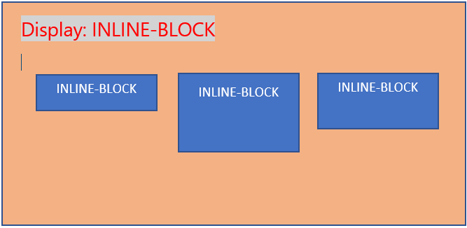

Every HTML element is a block in the shape of a square or a box and owns a display property. Unless explicitly specified, all of them have either inline, inline-block or block values set.
display: inline;
Inline elements get placed literally in a single line together side by side with different inline or inline-block elements.
display: inline-block;
It’s essentially the same thing as inline, except that you can set height and width values Basically, it’s a combination of INLINE and BLOCK as it’s name suggest. You can change the height and the width and also place them side by side.
display: block;
The element will start on a new line and occupy the full width available. And you can set width and height values.
Inline = Imagine you are in a football stadium, and you have rows of seat.If you assign your friend an Inline seat, they will seat next to you. With Inline seats, you will be seated next to each other, with the same standard physical stadium chair.
Inline-Block = Now, imagine you are now joined by your billionare friend Elon. He gets to seat next (Inline) to you and because he is a billionare and wants to be comfortable watching the game, he then seats in a huge recliner seat (block). It's bigger than the standard size stadium chair.
Block = Now, imagine another friend came to join you to watch the game. Her name is Karen, but because Karen is Karen and people doesn't like her. She is assigned a block seat, she does not seat next to you. Instead she sits in the next row, alone.